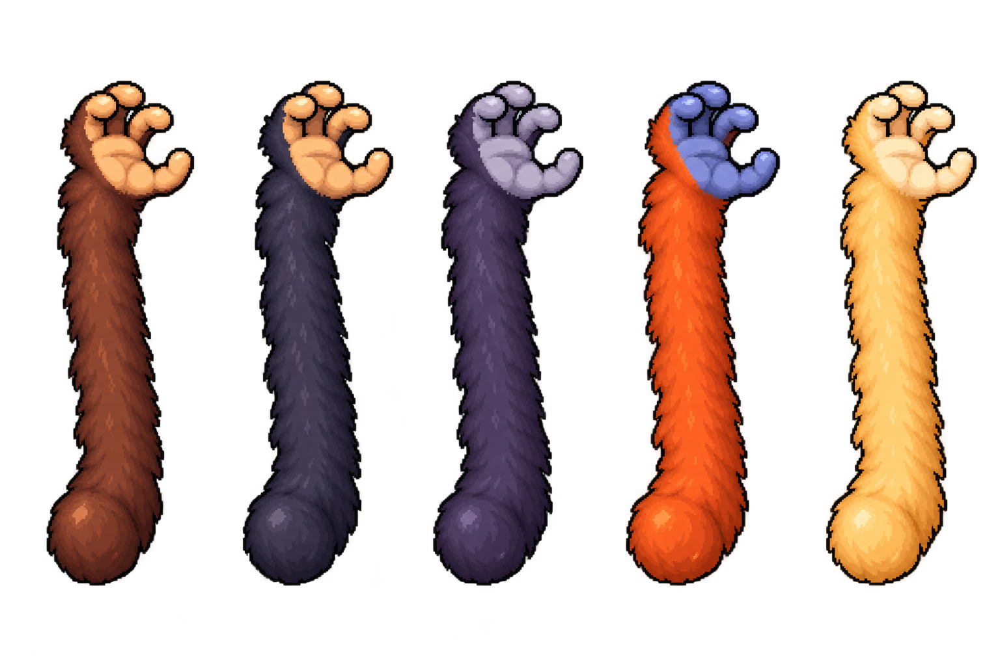

Double-jump roll and slap studies. Grab arms are separate components below.
Four poses per action. Early visual prototype: alignment and roll in-between poses still need cleanup.

Open full animation sheet · Open arm sheet